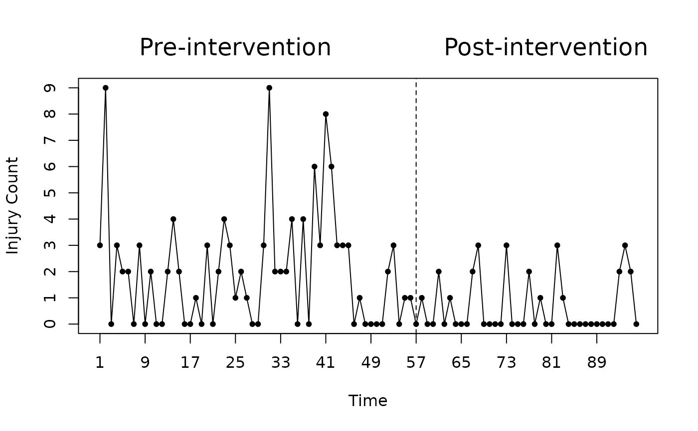

Monthly number of injuries in hospitals from July 1988 to October 1995.
References
Yau, K. K. W., Lee, A. H. and Carrivick, P. J. W. (2004). Modeling zero-inflated count series with application to occupational health. Computer Methods and Programs in Biomedicine, 74, 47-52.
Examples
data(injury)
plot(injury, type = "o", pch = 20, xaxt = "n", yaxt = "n", ylab = "Injury Count")
axis(side = 1, at = seq(1, 96, 8))
axis(side = 2, at = 0:9)
abline(v = 57, lty = 2)
mtext("Pre-intervention", line = 1, at = 25, cex = 1.5)
mtext("Post-intervention", line = 1, at = 80, cex = 1.5)
